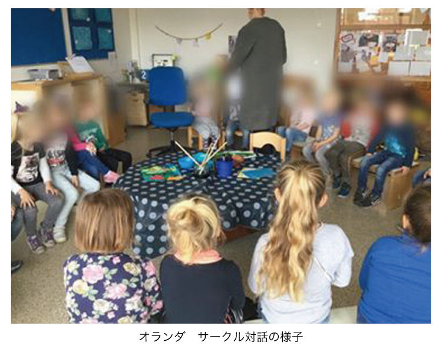
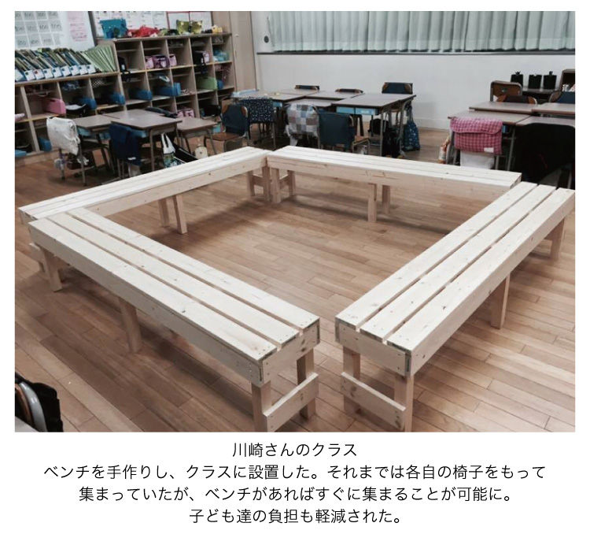
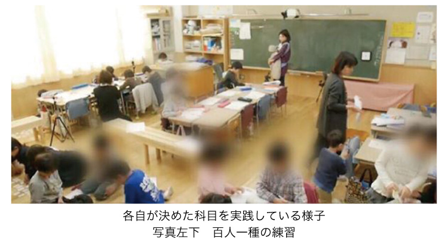

| 「いや」って言っていいんだよ。 子育てから性教育へ | |
| 川原 麻美 | |
| 川原麻美 (2019) | |
「性教育」を子育てに取り入れられていますか？
子どもの「いや」を受け止められていますか？
性教育はいつから始めたらいいか、どのように伝えたらいいか。ナイーブな問題だからこそ親は悩みます。
そして残念ながら、現在の学校教育における「性教育」はあてにできません。
これらの性教育の疑問について、本書の後半でお答えします。社会的事例や海外における「性教育」、子育てにも取り入れられる海外の絵本、子どもと一緒に読める漫画やＤＶＤもご紹介します。
産婦人科医として約９年間、お産や不妊治療の現場に携わってきて、科学的な理解を深めれば深めるほど、妊娠・出産のよくできた仕組みに感心してしまいます。例えば、卵子と精子が出会う時、卵子が精子１匹しか受け入れない仕組み。妊娠中、本来は異物である赤ちゃんをお母さんは体内に受け入れ約９か月間育てること。１リットルくらい出血することも珍しくない出産。それに備えてお母さんは血をうすくしてお産にそなえること。他のエピソードも本書に書きましたのでぜひお楽しみください。
また、本来「性教育」とは「性」について学ぶだけではなく、生命の尊さ、家族とは何かといったことまで学ぶことが大切です。生命の大元である、妊娠・出産について教えずに性教育は成り立ちません。しかし学校教育ではこの分野を教えられずにいます。学習指導要領に「性交」や「妊娠」は含まれていないからです。学習指導要領以外のことを発展的に教えることは問題ないはずなのですが、教育現場でそれを超えた内容を教えると教員が処分されたり教えないよう指導されるといった政治介入を認めることも事実です。一方でこのような発展的内容を教えることによって人工妊娠中絶数が減少するなど効果がある地域もあります。これらのこともご紹介します。
さて我が家における性教育・子育ての参考にした教育方法、イエナプラン教育。この教育方法は、子どもの幸福度が高いことで有名なオランダで行われている教育方法の一つです。本書の前半でイエナプラン教育についてご紹介します。オランダに移住した小学校教諭へのインタビューの章もあり、オランダでの現場の様子やそれを日本に取り入れた様子など、イエナプラン教育の魅力を体感できる内容になっています。
そして重要なことは子育てと性教育はつながっているということです。子育て、性教育どちらにおいても「自分を大切にすること」「相手にいやを伝えること」「相手を尊重すること」、この３点が非常に重要です。特に日本では敬遠されがちな「いや」を伝えること。これを幼い時からできるようになることで、「性教育」もうまく伝えられるようになるのです。イエナプラン教育をヒントにした「いや」を伝える重要性、我が家におけるその実践例・効果もお伝えします。
本書は「性教育」に関する知識・考え方をワンランクアップできる一冊です。そして子育てにおいても、オランダのイエナプラン教育をヒントにブラッシュアップできる一冊にもなっています。
子どもがまさに思春期の方や性教育を家庭でどのように取り入れたらよいか悩んでいる方から、子どもはまだ小さいから性教育はまだ先・・・でもどんなことを準備したらいいのだろうと迷っている方、日本の教育の画一性や多様性のなさに息苦しさを覚えている方、子どもの喧嘩に日々疲れている方、このような方々にぜひ読んでいただきたい内容です。
ぜひ最後までお楽しみください。
２０１９年６月 川原麻美
私は医師になって４年目を迎える春に長男を出産しました。その時期は、産婦人科を専門として働き始めて１年目を終える頃でした。仕事はまだまだできないことが多い中、できることも少しずつ増え、仕事が面白くなってきた時期でもありました。もっと手術をしたい、出産の現場に立ち合いたい、という思いがあり、出産を契機に仕事を休むことは怖く、気が進まないことでもありました。
出産前は、「こんな状態で母親になっていいものだろうか」「きちんと子育てをできるだろうか」 そんな不安のもと出産しました。育児について何も知識がなかった私は育児書や教育について書かれた本を読むことにしました。そんな時出会った本の一冊が『いま「開国」の時 ニッポンの教育』（尾木直樹・リヒテルズ直子 著）でした。著者の一人である、リヒテルズ直子さんは１９９６年からオランダに在住し、そのオランダの教育方法の一つであるイエナプラン教育を日本に広めた人物です。この本で「イエナプラン教育」という存在を知り、とても衝撃を受けました。子どもを一人の人間として尊重し、対等に接するその理念のもと成り立っている小学校はとても自由で楽しそうで、こんな小学校生活を送りたかった、と思わせる学校でした。そのあとはリヒテルズ直子さんの著書を読みあさりました。私にとってのイエナプラン教育のキーワードは「対等」「自律」「多様性」でした。
イエナプラン教育を知るまでの私は子どもは小さくて、力のない存在。親が守ってあげないといけない。親が導いてあげる必要がある。そう考えていました。しかし、子ども本来の力を引き出すような教育を行えば、子ども達は大人が思うほど弱い存在ではなく、ちょっとしたきっかけを大人が与えれば、子どもは自分の力で歩んでいけるようになるのだと気づきました。学校は知識や技術を学ぶことも大切。けれどそれ以上に、学校を終え社会に出た時にどんな人間になっているか、そのことの方がずっと大切なのです。どんな大人になるか、社会に出たあと生きていく力や学び方を身につけているか、それらが大切だと改めて気づかされました。
イエナプラン教育に話を戻します。イエナプラン教育はドイツで１９２４年にペーター・ペーターセンが生み出した教育方法です。その後１９６４年にオランダで紹介されました。その当時オランダでは教育改革が起こっていた背景もあり、発祥国ドイツよりもオランダで急速に広がっていきました。
創始者ペーターセンは、学校を「社会的な共同体」として作り直していく 必要があることを深く理解していました。彼は生活様式が変化していく中で、人々の人間関係が希薄化し有機的で温かい関係の場を失っていることに注意を向けました。今から１００年近くも前にそのことに気付いていたのです。そのため、イエナプラン教育の小学校は勉強をする場所というよりも、子ども達が子ども同士、子どもと教員、保護者たちとともに生活をする場としてとらえられています。社会を意識した学校づくりがされていたのです。
例えば、子ども達が過ごす教室は「リビングルーム」と呼ばれています。教室で家にいるようにリラックスして過ごせるように様々な工夫がされています。教室の一角にはシートをひき、ごろんと寝転がれるようになっていたり、ソファやクッションが置いてあったり、子ども達は家から自分のお気に入りの人形をもってくることも認められています。授業中も自分の教室にいたくない気持ちになれば、廊下や別室で一度気分転換をしたり、気持ちをリセットして授業に臨むことが可能なのです。日本では子どもを自由にさせたら遊んでしまう、じっとしていられないと考え、授業中はじっとしていることを求めています。一方でイエナプラン教育では子どもを信じています。このように授業中の行動や持ち物について規則がないことは、子どもの主体性に任せても、子どもは学ぶことができると信じているからこその対応です。
教員、保護者達、大人は子どもを一人の人間として尊重して「対等」に接する、子どもを信頼するところから始まります。そのような中で育つ子ども達は自信を持ち、自分で考えて動き｢自律｣につながります。そして学校は、子ども達が社会でどのように生きていくか、どのような大人になるのがよいか常に考えています。そのためには他者との関係性が重要となります。相手を尊重することを学び、「人はみんな違っていい」ということを理解し｢多様性｣について身をもって理解できるようになります。
これらが私にとってのイエナプランの理解でした。次は特に感銘を受けた、「サークル対話」と「ブロックアワー」についてお話しします。
・対等、尊重を学べる「サークル対話」
イエナプラン教育では、「サークル対話」を色んな場面で行います。朝集まった時、授業の中で、帰りの集まりの時に。様々な場面で行われます 。先生、生徒が椅子でぐるっと一つの輪を作ります。その時に何か話したい生徒は発言します。この時必ず発言しなければならない、ということはありません。話したければ話す、話したくないなら聞いているだけ。先生に指されたらどうしよう・・・？ ということは考えなくてよいのです。ここでも生徒本人の主体性が大切にされています。先生が子どもを指導する、正しい方向へ導くというものではなく、子どもを信頼し、だからこそ子ども達自身が考え、自立につながります。サークル対話については次章で詳しく述べます。
・自律につながるブロックアワー
二時限分の時間をまとめてとり、１時間半から２時間程度の長い時間を使って「塊＝ブロック」のようにまとまって行われるため、このような名称で呼ばれています。イエナプラン教育では一斉授業はなく、ほとんどの授業が５～６人のグループを作って行われます。ブロックアワーも同様の形態で授業は進みます。そのグループ内で各自が取り組んでいる課題はそれぞれ異なります。その課題内容は１週間が始まる前に、グループリーダーと呼ばれる先生と相談して決めます。もちろん自習だけでは新しい知識は学べません。先生からの指導はあります。新しい単元を学ぶ時、同じ学年の10
人以内の子ども達が先生を囲んで15
分ほどの時間で新しい単元について学びます。先生と子ども達は手の届くくらいの距離に集まります。家庭で食卓を囲んで説明するような雰囲気で、先生からの説明が行われます。
これが終われば、この子ども達は各自の課題に取り組み、違う学年の子ども達が再度先生の周りに集まり指導が始まります。これが繰り返されます。イエナプラン教育では異年齢教育が基本のため、３学年が一緒に学んでいます。しかし新しい単元の指導の際は、同じ学年ごとに子どもを集め指導をします。そのため、３回このような時間が必要となり、ブロックアワーでは他の授業よりも長い時間数が必要となるのです。指導が終わると先生は子ども達の間をゆっくり歩き、観察し、アドバイスをしたり、子ども達からの質問に答えたりします。
子ども達は課題に取り組み、課題が終われば、さらに発展的な課題を渡されたり、まだ終わっていない他の課題に取り組んだりします。子ども達自身が考え、判断し取り組みます。だからこそ、教科ごとの細切れの時間ではなく、学習の時間として長い時間を確保しています。そしてこのように「自律」が身につくのだと感じました。
はじめは、このような個別学習では一斉授業よりも先生の手間がかかりそうだと思いました。しかし、実際はそのようなことはありません。生徒達の主体性が守られ、「自律」も身につくと同時に、先生の目も子ども達に行き届いています。一斉授業では到底できないことです。
これだけの説明ではイメージがわきにくいと思います。次章インタビューの後半では、実際日本でブロックアワーを実践し子ども達がどのように成長したかわかる記録になっています。ぜひお楽しみください。
イエナプラン教育には他にも、｢ワールドオリエンテーション｣や先生が各生徒の進み具合をどのように把握するかなど他にも多くの魅力的な点があります。ご興味を持った方はぜひ参考図書をお読みになってみてください。
＜参考図書＞
『いま「開国」の時 ニッポンの教育』 著者 尾木直樹・リヒテルズ直子
『オランダの個別教育はなぜ成功したのか イエナプラン教育に学ぶ』 著者 リヒテルズ直子
『イエナプラン教育 共に生きることを学ぶ学校１ イエナプラン教育ってなに？』 著者 フレーク・フェルトハウズ ヒュバート・ウインタース 訳／リヒテルズ直子
オランダでイエナプラン教育に携わっている川崎さんにお話を伺います。
川崎さんはオランダに移住後、イエナプラン教育のクラスでアシスタントを勤めており、現地の教師や子ども達の様子を肌で感じています。オランダに移住する前は、日本で２年半、一斉授業のスタイルをやめ、イエナプラン教育に沿った授業のやり方を実践していました。私はその授業（小学校三年生、28
人クラス）を参観しました。イエナプラン教育の本を読んでも、「本当にできるのか？」「ただの自習学習になってしまうのではないか？」という疑問がぬぐい切れなかったからです。しかし授業を見ればそんな疑問はすぐに消え去りました。そして子ども達の落ち着いた様子にとても驚きました。リラックスしていて、何かに追われる様子もなく、楽しそうに、時には集中して取り組んでいたのです。そして教師である川崎さんもとてもリラックスしていました。私のそれまでの学校のイメージと違いました。先生は子ども達に指示を出すために大きな声を出しているようなイメージでしたが、川崎さんは違います。子ども達の様子をよく観察して、すぐそばにいる人に語りかけるように話しながらゆったりと授業をしていました。そんな姿がとても印象的でした。自分の子どもにもこのような生活を送らせてあげたいと思い学校を後にしたことを覚えています。
川崎さんの経歴を簡単に紹介したあと、オランダ研修や現地での様子、日本で実践した時のことについて伺いたいと思います。
川崎さんの経歴です。
２００６年 東京都公立小学校教師として勤務開始。
２００９年 オランダにおけるイエナプラン教育を知る。
２０１５年 オランダ イエナプラン研修に１週間参加する。帰国後、日本でイエナプラン教育の理念を実践し始める。
２０１７年 家族４人でオランダへ移住 二人の息子は現地校に通う、本人はイエナプラン教育を実践するクラスでアシスタントとして勤務。イエナプラン専門教員資格取得。
２０１８年 イエナラボ
を立ち上げる。
オランダ移住後にイエナプランを学ぶにつれ、すぐに子ども達と授業をしたい気持ちに駆られる。そんな時、イエナプラン教育について興味をもってくれた親御さん、子ども達と出会い、イエナラボ＠オンライン～３週連続探究レッスン～を開始する。参加する子ども達は６歳から12
歳までと幅広く、オンンライン上で「おにぎり」「風船」など色々なテーマでプロジェクト型学習を行なっている。
＜活動・取材・メディア実績＞
イエナカフェ＠すみだ子育てメッセ 取材
Ｆｉｎｄ アクティブラーナー 取材
ＴＢＳ「ニュースな２人」出演
ＡＥＲＡ ２０１７年９月11
日号「はたらく夫婦カンケイ」
川原
川崎さん、よろしくお願いします。
川崎
よろしくお願いします。
川原
ではさっそく本題について話したいと思います。まず２００９年にイエナプラン教育と出会ったそうですが、その後実際の教育現場ではどのように実践されていましたか？
川崎
はじめは授業の形態を変えることはせずに、理念だけ取り入れていました。イエナプランの中の「ひとはみんな違っていいんだ」ということを軸にして授業を進めていました。現在の日本の教育は一斉授業で、その流れにのれる子ども達がよいとされる風潮があります。教師側としても子ども達一人ひとりに気を配りたくてもなかなかできない現状です。そこに違和感を覚えていた２００９年、イエナプランと『学び合い』（上越教育大学西川純教授提唱）に出会いました。そして、一斉授業からの脱却を試みました。教師が話す時間を出来るだけ短くし、そのあと子ども達が課題に取り組み、わからなければ友達に聞いたり教えたり、という流れです。イエナプラン教育では、「大人も子どもも一人一人にかけがえのない価値がある」「一人一人が違う」ということを大切にしています。それまでの自分は、「みんなと同じことをする」ことを教えていたことに気が付き、とてもショックでした。一人一人が違うことを前提に子ども達と向き合うと、今までとは全然違う、前向きな気持ちになれました。この前提を心の軸にして授業、そして学級経営をしていこうと思いました。
川原
その６年後にオランダに１週間の研修に行かれていますね。
川崎
はい、二人目の出産・育児が少し落ち着き、この時期に家族４人で行くことができました。長男３歳、次男１歳の時でした。
川原
現地で感じたことを教えてください。
川崎
イエナプラン教育を実践している学校を見学しました。そこでの子ども達はとても落ち着きがあり、自然に過ごす姿に感動しました。
川原
日本の学校では子ども達は落ち着かなかったり、自然に過ごせていない、ということでしょうか？
川崎
残念ながら、オランダの子ども達の姿を見てしまうと、その通りと言わざるを得ません。規則が多いため、我慢することが多く、どうしても窮屈です。少しのおしゃべりや立ち歩くこともとても目立ちます。それが落ち着きがないようにも映りますし、授業中我慢している子ども達は休み時間に発散させようと休み時間は教室から飛び出し、遊びに行きます。イエナプランスクールでの授業は一斉授業ではないため、個人のペースで勉強を進められます。わからないことはその都度近くの友達か先生に聞ける環境にあります。先生が説明をしている時間も短いので、授業中に子ども達が自分の言葉で話すことや立ち歩くことももちろん可能です。無理や我慢をすることが少ない環境です。そのため授業中も子ども達は自然体でいられます。授業が成り立たないということはありません。
川原
なるほど。日本では姿勢をよくしないといけない、友達としゃべったら注意される、じっと座っていないといけない、トイレにも先生に許可をとらないといけないですよね。オランダではそのようなことはないのですか？
川崎
どれもありません。とにかく自然体で授業を受けられるのが特徴です。ブロックアワーのように各自が決めた学習をしていても、わからなければ近くの友達に聞く、それでもわからなければ先生に聞きに行きます。友達と話して注意されるということはありません。もちろん、大声を出したら迷惑がかかるので、注意をされることもありますが。先生が説明をする時間は数分程度です。授業にもよりますが、日本では姿勢を正して先生の方を見ていなければいけないという時間が授業の半分以上を占めていることが多いのが現状です。また授業中にトイレも、もちろん自由に行けます。
川原
日本では、授業中にトイレに立つことは論外ですよね。どうして休み時間に行っておかなかったの？ となりますよね。そしてもし授業中に行きたければ、先生の許可をとらなければいけない。この習慣は中学生、高校生、大学生、下手すると社会人になっても見られる行動で、幼い頃からの習慣というのは怖いなという思いがあります。
川崎
そうですね。オランダでは子どもが一人の人間として認められているということを生活の色んな場面で感じます。学校だけではなく、社会全体として大人の認識がそのようになっているのだと思います。トイレへ行くことについても、大人が子どもを信頼しているから、子ども達自身が考えて行くことが当然ととらえられています。
川原
たかが「トイレに行くこと」だけでも考えさせられる問題ですね。さて、オランダ研修で他に印象的だったことはありましたか？
川崎
もう一つ感動した点は「サークル対話」の居心地のよさでした。
川原
サークル対話はどのような時に行うものですか？
川崎
イエナプランスクールでは「サークル対話」を大切にしているので、１日の中で何回も行います。「先生対子ども」ではなく、「先生も子どもも一緒に丸くなる」ことを常に意識しています。朝や帰りのサークル対話は、朝の会、帰りの会、というとイメージがわきやすいと思います。ただしサークル対話で話す内容は全く異なります。日本での朝の会は５分ほど、その日の連絡事項を行います。帰りの会も５分から10
分、連絡帳を書いたり、配布物を配り、次の日の連絡事項を伝えます。とてもせわしないものです。教師から生徒へ一方的に伝える、業務連絡のように感じることもあります。各教科の授業を標準時数を目指して行わなければならない法律があり、その上で余った時間に急いで行うので、どうしても忙しなくなってしまいます。サークル対話も、毎朝15
分程度行いますが、行う曜日によって内容は異なります。例えば、週の始まりに行うサークル対話は、週末にあった楽しかったこと、悲しかったこと、みんなに話したいことなど各自話したい人が話します。習い事で手に入れたメダルや、海で拾った貝殻などを持ってくる子もいます。４・５歳クラスでは、自分の好きなぬいぐるみなど持ってくる子もいます。そういうものをだっこしながらサークル対話に参加するのです。

川原
そのような話せる場があるというのは、子ども達にとって学校がよりリラックスして過ごせる場所になりそうですね。また、学校に関係ないものを持ってこないように、という日本の学校とは対照的ですね。学校側が子ども達を信頼して認めているからこそ、持ちものに対しても厳しい規制がないのでしょうね。
川崎
そうですね。自分のお気に入りがあるからこそ、子ども達は家にいるようにリラックスして、自然体でサークル対話に参加できます。そして、そのサークル対話では必ずしも全員が発言しなくていいこと、も居心地の良さの一つでした。
川原
日本では、どうしても全員の意見を聞く、全員が賛成か反対か述べる、ような強制する雰囲気がある時がありますね。先生に指されたらどうしよう、という怖さや緊張感も時にはあったように思います。このサークル対話では先生から指されて生徒が困る、というような場面はないのですか？
川崎
そのような場面を見たことはありません。先生が「いつか自分から話せるようになる」と信じて、長い目で見守っているような気がします。実際に、現在アシスタントをしているクラスでも、新年度の９月にはサークルでは聞くだけだった子ども達が、半年後の３月頃には小さい声だったり、短い言葉だったりしますが、自分の言葉で話しているのを見かけました。
川原
なるほど。先生からの信頼があってこそ、それぞれの子どものペースで成長できているのですね。子育てにも共通する、「子どものことを信頼して待つ」ことの大切さを学べます。ここからはオランダでの一週間の研修を終えて日本に戻ってきてからについて伺います。帰国後に、イエナプラン教育を実践されていました。導入されるきっかけやどのように導入したか教えてください。
川崎
まず導入しようと思った理由は、オランダで出会ったイエナプランスクールの校長先生が、「できること以上のことをしよう」という言葉をかけてくれたことでした。はじめは、「帰国後はできることから始めよう。週に１回くらいはサークル対話やブロックアワーをやってみようかな？」と思っていました。でも、この言葉のおかげで、「毎日サークル対話とブロックアワーを取り入れよう」と決めました。同じ研修を受けていた友人たちの間でも、この言葉はかなり印象的だったようです。
川原
「毎日」とはすごいですね！ その校長先生のおかげで、日本中でイエナプランの実践者が増えたのですね。「できること以上のことをする」というと、日本では頑張る、根性というイメージもありますが、川崎さんはどのようにとらえましたか？
川崎
私は全くそのようには思いませんでした。感銘を受けたイエナプラン教育の学校で、先生たちはとてもリラックスして仕事をしていました。休憩をしっかりとり、その時間はコーヒーを飲んで先生同士でおしゃべりを楽しんでいました。そして自分たちも思い切り遊ぶことを楽しんでいる姿を見ました。その一方で、子ども達の様子もしっかりと見守り、的確な助言、指導、支援をしているように見えました。「できること以上のことをする」には「枠を広げる」という意味があるのだと思います。心の枠、できることの枠を広げて、余裕をもった中で取り組むことが大切である、ということなのだと思います。
川原
なるほど、それはまた日本とは異なる価値観かもしれないですね。それを実行されている校長先生からの言葉かけだったからこそ、多くの日本の先生方がその言葉に影響を受けたのでしょうね。それではサークル対話を導入したことについてお話を伺いたいと思います。導入はスムーズでしたか？ 他の授業への影響はありませんでしたか？
川崎
導入はスムーズで、子ども達ははじめから楽しんで参加してくれました。サークル対話は15
分程度が理想ですが、朝の会は５分しかありません。残り10
分は１時間目の授業に食い込む形で行いました。先ほどお話ししたこととも重なりますが、私の授業スタイルをお話しさせてください。私の授業はイエナプラン教育を導入する前から、一斉授業はやらず、グループ学習のような形をとっていました。授業のはじめと終わりに教師が数分話し、残りの時間は子ども達同士が教えたり、聞いたり、そこで解決しなければ教師に聞くような形式で進めていました。そのような流れだと、授業時間が多少短くなっても、授業の進行に大きな支障はなく進められました。

川原
なるほど。一斉授業だと先生が話す時間が長いことも特徴的ですよね。先生が話す時間が短ければ、その分子ども達の集中力も継続するでしょうし、教えたり聞き合うことでお互いの理解も深まりますね。
川崎
その通りです。そして、どうしても理解が追い付かない子どももクラスにはいます。そういった子ども達にも教師がより早くに気づくことができ、フォローができることも特徴的です。
川原
それでは「ブロックアワー」について具体的に教えてください。
川崎
一言でいうと、「個別最適化された授業」です。一週間が始まる時に、その週の予定を大まかにたてます。算数はここまで進める、国語はここまで、といったように。ブロックアワーの時間は、各自がどの科目を行うかは自由です。算数は今週の課題は終えたから、まだ終わっていない国語を進めよう、理科を進めよう、でもいいわけです。「私は国語が苦手で時間がかかる、だからたくさん時間をとっておこう」、というように調節もできます。そしてこの時に、足し算の繰り上がりがわからなければ、近くの友達に聞く、それでもわからなければ別の友達に聞く、もしくは先生に聞こう、となります。

川原
子ども達自身が自分の状況を把握して考えて動ける自由があるのですね。
川崎
その通りです。
川原
先生と一週間の予定表を確認するので、客観的な目も入り、偏ってしまうということも防げるわけですね。
川崎
その通りです。教師側も一斉授業と違い、子ども達が学習している時にその様子を観察することや、授業内で質問を受け、各子どもに目が行き届いています。そのためブロックアワーの予定を組む際も、子どもへの理解度も深いため適切な指導が行えるように感じています。
川原
学力面ではどうでしょうか？
川崎
「学力」とはなんでしょうか？ 学力テストだけで計れるものではないと思っています。一生涯、自分で、時には人の力を借りることも含めて、学び続ける力をつけることができることではないでしょうか。そう考えた時に、それは一斉授業で身につくのか、個別の学びで身につくのか、考えてみてください。魚を取ってあげるのではなく、魚の釣り方を教える、という比喩が使われます。「学び方を学ぶ」ことが大切なのではないでしょうか。
川原
なるほど、とても深い内容ですね。親としてもきちんと考えていきたいです。さてサークル対話やブロックアワーを導入して、子ども達の変化はどうでしたか？
川崎
ブロックアワーでは、教師として子ども達と関わる時間が取れたことが一番のメリットでした。子ども達が取り組む姿を一人ずつ見ることができるので、つまずいている子どもに気付くのが早くなる、その分対応も早くなります。またサークル対話、ブロックアワーともに子ども達同士でのコミュニケーションをとる量が各段に増えるので、子ども同士の関係性が深まります。困ったことは特にありませんでした。３年生のクラスの担任だった時、授業中にじっとしているのが苦手な子どもがいました。学力面では問題ない子でした。それまでの一斉授業のやり方では合わず、教室を飛び出すこともありましたが、年度末には、一日を通してこのような行動はなくなりました。ブロックアワーの時間に友人たちと百人一首の練習をしたり、読み手になったり、自然に授業に溶け込み、本人にとっても苦労なく一日を過ごせるようになったのです。
川原
それはとてもすごいことですね。その子にとっても、クラスの子ども達にとってもいい経験になったでしょうね。そのように変わった原因はどこにあると思いますか？
川崎
友達同士でのコミュニケーションの量が増えたことだと思います。先ほども述べましたが、このやり方を導入すると、教師が話す量が減り、自然と子ども達が話す量が増えます。子ども主体の授業になります。そうすることによって、本人がより自然体でいられる時間が増え、学校での生活態度に変化も見られたのだと思います。
川原
授業中のそういったおしゃべりも子ども達にとっては成長のきっかけになるのですね。ところでオランダ移住のきっかけは何かありましたか？ 様々な葛藤や悩み、理由はあったと思うのですが、一番の理由を教えてください。
川崎
２年間イエナプラン風の授業を実践してみて、ますますイエナプランの魅力を感じました。本場オランダでもっと学びたい！ という思いが強くなり、家族４人でオランダへ移住することを決めました。
川原
現在のオランダ生活でさらに発見したことや思いはありますか？
川崎
イエナプランスクールだけでなく、オランダの多くの学校が子ども達一人一人を尊重していて、子ども達が自然体で過ごせるということを実感しました。私が住んでいるのはかなり田舎なのでより自然体に過ごせているのかもしれません。約２年経った今も、毎日の生活の中で日本との違いを感じて驚くことがたくさんあります。この驚きを忘れないように、きちんと記録しておかなければと思っているのですが、アウトプットが追いつかない状態です。
川原
ブログでもオランダでの生活の驚きや感動のエピソードをつづっていますね。私も拝読していますが、学校行事の力の抜け具合やサラダを作る授業など、日本のやり方と大きく異なっていて勉強になります。 日本では画一化されていて、同調圧力が強い、まじめに取り組まなければいけないという風潮が強いです。そのまじめさが大切なこともありますが、息苦しさにつながっているとも感じています。オランダでの様子を知るようになり、「これくらいでもいいんだ」「こうやって子ども達は学んで成長していくんだ」と新しい風を知ることで、考えの幅が広がっているように思います。
川崎
そうですね。「イエナプランだからいい」「オランダだからいい」というつもりはありません。日本の学校の現状に何かしら疑問をもった時に、無理して我慢したり、人に合わせたりしなくていいんだよ、と伝えたいです。どうしたらもっと子ども達が生き生きと毎日を過ごせるのか、みんなで一緒に考えていけるような風土になることを願っています。私も楽しく「できること以上のこと」をしていきたいと思っています。
川原
今回は貴重な体験を教えてくださり、ありがとうございました。今後も、川崎さんの考えや思いが伝わることを応援しています。今後のご活躍を期待しています。
川崎
今回は貴重な機会をありがとうございました。
皆さん、性教育とはどのようなイメージがありますか？ 暗いイメージですか？ 明るいイメージですか？ 親子での話しにくさはありますか？
我が家では、３歳頃から「赤ちゃんはどうしてできるの？ どこから生まれるの？」という質問をされることが増えました。
産婦人科医として実際の妊娠・出産について理解していても、幼い我が子にどう伝えるか、わかりやすく伝えるにはどうしたらいいか悩みました。色々調べていくうちに幼い時から少しずつ教えていく必要があることや、現在の日本の公教育では残念ながら不十分であることもわかりました。学校の保健の授業で性教育を扱う時期は小学校４年生からです。月経や射精については５年生で学びます。「中絶」「避妊」については高校生で学びます。これらのことを教えるにも関わらず「妊娠」については指導要領に入っていません。なんて非現実的な教育なんだろうと思うと同時に、では家庭内でどのように伝えるべきか、と思考錯誤が始まりました。
妊娠について、性教育について絵本や書籍を調べると、「自分の身を守る方法」「どうやって逃げるか」「プライベートゾーンは触らせてはいけない」など、暗いイメージだったり、妊娠についても性行為の部分は描かれておらず、真の理解につながるのかと疑問が残りました。性行為について大人から子どもには伝えにくい面もあるのでしょう。現在の教え方は、こういった大人にとっては話しにくいことを触れずに伝えられて都合がいいのかもしれません。けれど、これで本当に子どもに伝わるのでしょうか。伝えにくいから伝えないというのは単に大人の逃げではないでしょうか。ヨーロッパ諸国の教育機関では子ども達にこういったこともきちんと伝えています。
一方で、産婦人科の現場では性教育が不十分であることも感じていました。性感染症が原因で不妊症の原因となったり、妊娠についての知識が不十分であるために不妊治療開始が遅れてなかなか妊娠が難しかったり、人工妊娠中絶を希望する女性の多さも性教育が不十分であることが原因だと考えています。
性教育はもっと楽しく、明るいもので、日常の延長上にあるくらい話しやすい話題であってほしい。知識だけを学ぶのではなく、自分を大切にすること、相手を大切にすることも同時に学ぶものであってほしい。そう思うようになりました。
それぞれの問題点を述べたあと、では実際に家庭ではどのように伝えていったらいいのか、考えていきます。
日本の性教育は小学校４年生から始まります。
小学５年生時に、宿泊行事前には、男女分かれて生理や射精の話がされています。また、国による指導要領では「避妊」や「人工妊娠中絶」は高校で取り扱う内容としていますが、小学校から高校生における性教育の中で「性交」「妊娠の経過」は取り扱わないことになっています。指導要領は大網的に扱ってよいことになっているので、発展的内容として「性交」「妊娠経過」も含めて授業を行うことは問題になりません。つまり罰則に問われることはありません。しかし、発展的な授業、つまり指導要領に載っていない「性交」「妊娠経過」を扱ったり、中学時にいわゆる先取りとして高校で扱う内容とされている「妊娠経過」について授業を行うことで政治的介入があり、処分を受けたり指導を受ける学校があることも現状です。国の言い分としては「若いうちの性行為は望ましくない。だから具体的には教えない」とのことですが、実際、性行為年齢は若年化しており、インターネットの普及・様々な動画配信により、性について玉石混合な情報が簡単に手に入る環境でもあります。中学生・高校生の頃から性に関する情報に接し、ポルノ動画など誤った情報を正しい情報として受け取る子ども達も少なくありません。だからこそ学校で適切な性について伝えることがより大切になってきます。
学校では教えることを避けられている「性交」と「妊娠経過」ですが、「性行為」は大切な人と行うことや、「妊娠経過」における生命の神秘・不思議・偉大さを伝えることは「性」「生」を学ぶ上で避けて通れないことです。
産婦人科医として不妊治療・妊娠・出産の現場に立ち会ってきましたが、これらの現場に携わり理解を深めるにつれて、妊娠し、母子ともに無事に出産を終えるということは奇跡だという気持ちはより強く感じるようになりました。赤ちゃんは流産や早産、妊娠中の合併症などの様々なリスクや難問をくぐりぬけて、生まれてくるのです。お母さんにとっては赤ちゃんでも本来は異物として認識するはずです。異物、つまり自分のものではなければ、細菌やウイルスと同様にやっつけようと排除するものです。しかしそうはせずに受け入れて、自分の体内で９ヶ月近く育てるのです。
不妊治療の現場で例えば体外受精を行っている患者さんであれば、状態のよい受精卵を子宮の中に戻しても着床できないことがあります。色々調べると、子宮の内膜の状態が整っていないことがわかります。子宮内膜の状態を厳密に調べて、通常より12
時間ほど移植する時期を前や後にずらす、そうすると受精卵が着床する、そういった不思議を目の当たりにしています。もちろん、これらの行為は確率論的な話でもあるので、同じような治療の仕方でも妊娠したかもしれない、子宮に戻した際の手技が前回よりもうまくできたのかもしれない、なども考えられるのですが、それでも、やはり不妊治療をせずに自然に妊娠をする、その偉大さをより強く感じずにはいられないのです。その妊娠・出産のすばらしさを理解してこそ、望まない妊娠とはどういことなのか、中絶手術による女性側の精神的・肉体的負担にも考えが及びます。だからこそ避妊することの大切さが理解できるのです。
学校教育において「性交」「妊娠経過」を扱わないことは不十分であり、学校教育における「性教育」は改善する必要があると言わざるを得ません。
一方で日本でも妊娠・出産についても伝える、踏み込んだ性教育を行っている地域はあり、それにより性交渉の時期も遅くなり、人工妊娠中絶数が減少した実例もあります。
つまり、国が避けている内容を子ども達に伝えた方が、国が望む「性行為」自体も減少し、結果としてよい方向へ向かうことがわかっているのです。
次はこれらのことをお話しします。
先ほども触れた政治的な介入があった事件として、「七生（ななお）養護学校事件」が有名です。この概要を簡単に説明します。
１９９７年 七生養護学校の男性生徒と女子生徒が性的関係を持ったことが発覚。
その後、教員と保護者が協議を重ね、知的障害をもつ子ども達への性教育プログラムを開発。男性器や女性器の部位や名称を織り込んだ歌や人形を使った授業方法だった。海外の絵本や出産状況がわかるＤＶＤなども含まれていた。同様の悩みをもつ養護学校からの研修も積極的に受け入れていた。
２００３年９月 東京都教育委員会は「授業内容が不適切である」として使用していた教材１４５点をすべて没収された。校長や、関係した教師31
名が停職等処分された。
２００５年 元校長は処分を不当として東京都教育委員会を提訴。
２０１０年 東京都教育委員会の処分は不当であったと判決をくだし、元校長に対する処分を取り消すことを確定した。
つまり、七生養護学校における性教育は、法的に問題ではなかったということがわかります。使用していた教材を見ても、現実の性行為や妊娠・出産に即しており、不適切である理由はわかりませんでした。子ども達になんとかして正しいことを伝えたい思いで教材を探し、作っていたことがうかがわれました。
欧米諸外国で行われている性教育と比較しても、遜色ありません。
もう一件、政治的介入を認めた例をご紹介します。
２０１８年東京都足立区の公立中学校で行われた「性教育」の内容について、再度東京都教育委員会が問題視しました。授業内容は、『性の正しい知識を通して性交する相手の気持ちを考え、対等な関係を築けること』を目的とした、人権教育を意識した授業でした。問題とされた点は２点でした。
①「性交渉はもっとも深いふれあいである」「コンドームはコンビニで買えるが、ピルはコンビニでは買えない」など、「性交渉」を扱ったこと
②高校で扱うべき「避妊」や「人工妊娠中絶」について中学生の授業で具体的な内容に及んだこと
このような性教育の方法は間違っているのでしょうか。日本では適さないのでしょうか。そうではないことがわかる例があります。
新潟県や秋田県では全国平均より人口妊娠中絶件数が多く、県として対応し、その結果10
代の人工妊娠中絶数が減少しました。秋田県では、小学生（４年生以上）・中学生・高校生に対して、秋田県医師会から医師を派遣して講演会を行っています。一般的に行われている性教育とは異なり現実に即した性教育を行い、学校ごとの実態に即した講演が行われています。その内容は、生命の大切さ、性感染症、男女交際、妊娠・出産・避妊、妊娠中絶などについてです。この性教育を開始して、７年後には秋田県における10
代の人工妊娠中絶数は全国平均を下回りました。
新潟県でも同様に性教育について取り組んだ結果、10
代の人工妊娠中絶数は全国平均を下回りました。
このような実例を見ればわかるように、性についての一部分を切り取って伝えるのではなく、現実に即して性教育を行うことで理解が深まり、結果として人工妊娠中絶数の減少につながることがわかります。日本の性教育はまだまだ改善の余地があります。
一方で世界の性教育事情はどうでしょうか。中高生にどのような性教育を行っているか調べるとヨーロッパでは幅広く生命について扱い、生物学的な面・倫理面から性教育を扱っています。生物の授業では、実際に男女の生殖器の模型を作ることもします。妊娠の経過についてももちろん取り上げています。例えば、妊娠中の赤ちゃんは子宮の中で羊水の中でぷかぷか浮いています。その状態を考えるために、水を入れた袋の中に生卵を入れます。その袋をふったりぶつけたり衝撃を与えて生卵の様子を観察します。次に生卵をビーカーに入れて同様に衝撃を与えます。このような実験から子宮や羊水の役割考える授業も行います。
倫理面においても、セクシャリティ、家族の形態についても多様性があることも学びます。ここでヨーロッパの社会事情を理解しておく必要があります。ヨーロッパでは同性婚、事実婚の権利が法的に認められている国も多く、結婚のとらえ方も日本よりも多様性があります。例えば、フランス、スウェーデン、デンマークでは婚外子の割合が半数以上になります。婚外子は、法律婚以外の親から生まれた子ども、つまり事実婚や事実婚と似た形態の夫婦関係から生まれた子どものことです。婚外子の親子も法律婚から生まれた家庭と同等またはほぼ同等の権利が法的に保護されています。このように法律婚ではない家庭にも法的権利を認めるようになり、それらの国では出生数が増加したといわれています。また法律婚として同性婚が認められている国が多いことも特徴です。このように家庭の形態も様々であることも背景にあって、家族にも様々な形態があること・ＬＧＢＴ（レズビアン・ゲイ・バイセクシャル・トランスジェンダーといわれる性的マイノリティの総称の一つ）などセクシャリティについての授業も正面から向き合って取り扱っています。
一方、日本では同性カップルによるパートナーシップが２０１５年にやっと認められました。それ以降導入する自治体が増え、現在（２０１９年６月末）約20
強の自治体が導入しています。しかしこの制度は同性カップルとして証明ができるだけであって、法的な効力はありません。具体的な問題点として、パートナーが産んだ子どもの親にはなれない、パートナーを扶養に入れることはできない、相続権がないといったことがあります。しかしＬＧＢＴは13
人に１人いるだろうと言われています。この割合は年代差もあり、調査方法によって変わってくるものでもありますが、それを考慮しても欧米諸国の割合とも大差ありません。そして日本ではヨーロッパ諸国のように法的制度を求めている人は多数います。日本では法的制度がないことや家庭の多様性のなさを理由に、性や家族の多様性について教えなくていいということにはなりません。このようなセクシャリティやそれに伴う結婚・家族形態の多様性について、社会の現状を考えても子ども達が知ることは重要です。そしてこのような教育が広がることによって、日本ももっと多様性を受け入れる社会につながることを期待しています。
総務省平成30
年版 情報通信白書 主なメディアの利用時間と行為者率
若者のネット動画利用とテレビへの意識
秋田県内の中学生・高校生を対象とした性教育講座の実際
〝性教育のタブー〟に踏み込んだ都立中学のモデル授業 15
歳までに知りたい性のこと
ＯＥＣＤ「Family Database」
国立社会保障・人口問題研究所 人口統計資料集
ＮＰＯ法人 ＥＭＡ日本
ｊｏｂ ｒａｉｎｂｏｗ ＬＧＢＴの割合
産婦人科医として診療にあたっていても理不尽さや性教育の不十分さを感じることもたびたびあります。その中でも二つ例を挙げます。
ａ．クラミジア感染
クラミジア感染は性交渉でうつり、性感染症の一つで、子宮や卵管に感染します。抗生剤を飲めば治る病気で、症状は出にくいため、知らない間に感染し治っていることもあります。しかし感染範囲が広がれば腹膜炎などお腹全体に広がり入院治療が必要となる病気でもあります。
クラミジア感染と不妊症、性教育と結びつきにくいかもしれません。しかしクラミジア感染は、妊娠する上で大切な卵管の機能を低下させてしまい不妊症につながります。卵管は子宮からつながり、卵巣のそばにあるとても小さな臓器ですが、妊娠する上で重要な役割をしています。卵管内で精子と卵子が出会い、受精し、卵管内にある細かい線毛がゆれ動いて子宮内へ送り届けます。この受精卵が子宮の内膜に無事着床できて初めて妊娠となります。つまり卵管は、受精する場所であり、その受精卵を子宮内へ運び届ける重要な臓器なのです。
クラミジア感染によって卵管がせまくなったり閉鎖して機能しなくなることにより妊娠しづらくなってしまうことがあります。妊娠を望むようになり、卵管の検査を行うことによって始めてわかります。もちろん、クラミジアに感染したことがある人が妊娠できないわけではありません。ただ、両方の卵管が機能していなければ、自然妊娠はできない、つまり体外受精をしなければいけなくなります。不妊治療の患者さんを診療するにあたり、クラミジア感染の方はしばしばいらっしゃいます。感染していることをお伝えすると、とても驚かれます。症状がなく、まさか自分が、という思いからです。性交渉で感染するため、夫婦どちらかに見つかった場合はパートナーも感染している可能性が高いと判断して、同時期に夫婦で治療を行います。夫婦の「どちらが」うつしたのか、それが時に外来時に問題となることもありますが・・・。男女二人とも治療は必要となりますが、妊娠する上でクラミジア感染による被害があるのは女性側です。クラミジア感染はコンドーム使用で防げる病気でもあり、男女双方への性教育として性感染症の問題や避妊することで防げると伝えることが大切です。日本におけるクラミジア感染は２０１２年以降男女ともに感染者数は横ばいを推移しています。その中でも10
代、20
代は増加傾向にあります。「性感染症」「避妊」「不妊症」「妊娠」は切り離せません。関連づけて適切な「性教育」を行うことが必要です。
ＮＩＩＤ 国立感染症センター 「若年者で増加してきている性器クラミジア感染症」
ｂ．緊急避妊薬
皆さんは「緊急避妊薬」「モーニングアフターピル」（以下緊急避妊薬）という言葉を耳にしたことがありますか？ この薬は避妊に失敗した際に妊娠を防ぐために飲む薬です。性行為があった時点から72
時間以内に飲む必要があります。飲む時期が早いほど、避妊できる成功率は高くなります。72
時間ぎりぎりでは成功率は半分ほどまでに低下します。そのため、「いつ」薬を飲めたか、ということはとても重要な問題になります。
緊急避妊薬の効果や避妊に失敗した場合のことが具体的にわかると、この項の理解がしやすいかと思いますので、それぞれ簡単にご説明します。
この薬を飲む意味は２つあります。
①排卵をおさえる（排卵しなければ、精子と受精しないので妊娠を防げる）
②着床を妨げる（たとえ受精したとしても、受精卵が着床する子宮の内膜が着床できる準備ができていなければ着床できない。つまり妊娠が継続しない）
避妊に失敗した状況
様々な状況が考えられますが、大きく分けると以下のような場合が考えられます。
①同意のもとの性行為 その際相手がコンドームをつけてくれなかった
②コンドームが破れた、外れた
③性被害にあった
さて話を戻します。
72
時間以内に飲む必要がある緊急避妊薬ですが、日本では病院を受診しなければもらえません。欧米諸国では薬局やガソリンスタンドで購入できる、市販薬です。風邪薬と同じような扱いなのです。世界的に使われている薬で、安全性は確認されています。だからこそ市販薬として販売されているのです。
日本では、２０１６年に市販薬として販売することも検討されましたが実現しませんでした。そして現在（２０１９年６月末）、オンライン診療での処方が検討されています。その方向性は女性が利用しやすいものとはかけ離れた方針となっています。この方針の一番の問題は女性の権利が軽視され、女性が信頼できない存在として議論が進んでいることです。現場の産婦人科医たちもこの方針の流れには反対意見が多いのですが、この方針を決定する人々にはなかなか声が届きません。
現在はパブリックコメント（国民から意見を募るもの）を受け付け中（２０１９年６月24
日まで）で、それにより方針を再度検討するということになっていますが、形式だけなのではないかと危惧しています。なぜかというと、パブリックコメントを受けてからの検討期間は数週間ほどで、今までの検討に時間をかけてきた期間に比べてとても短いものだからです。声をあげないよりはましと、私も提出しました。国民からの声がどのように反映されるのか、方針決定をある意味楽しみにしています。
さて具体的にどのような点で問題なのでしょうか。何点もあるのですが、そのうちの１つをご説明します。
・オンライン診療を受けられるのは条件付き。全員が利用できるわけではない。
緊急避妊薬が必要な場合、相談窓口に連絡する。そこで性被害や近くに受診する病院がない場合に、オンライン診療をすすめる。という流れです。繰り返しになりますが、欧米諸国では市販薬として販売されている薬です。日本で緊急避妊薬を市販薬として販売しないのであれば、全員がオンライン診療を受けられるように制度を整えるべきです。
当初はこのオンライン診療を受けられる人は「性被害にあって対人恐怖症がある場合」「近くに受診する医療機関設がない場合」、と限定されていました。しかし、その文言はけずられてこのような条件になりました。結局、オンライン診療を受けたければ相談窓口に連絡し、そこで医師から「あなたはオンライン診療を受けていいですよ」と言われて初めてオンライン診療を受けられるのです。ここで性被害にあった人が受ける場合を考えてみましょう。相談窓口に連絡をして事情を話す、オンライン診療でもまた話さなければいけない、そして薬局では薬を薬剤師の目の前で飲まなければいけない・・・ オンライン診療のよさが全く生かされていません。
外来診療をしていても、受診しにくる患者さんはなんとなくばつが悪そうに、肩身が狭そうに、受診されます。知り合いの目を避け、自分の自宅からは離れた病院やクリニックを探して受診される方が多いのも現状です。産婦人科は本来、月経痛がきつい、月経前の頭痛や気分の浮き沈みがつらいなど日常の困ったことを相談できる科でもあるのですが、どうしても妊娠・出産に関わる科というイメージが強い科でもあります。中学生、高校生が受診すれば妊娠したのかと近所で噂になるかもしれないと恐れる気持ちがあるのでしょう。オンライン診療であればスマホやＰＣがあればどこでも受診できます。周囲の目を気にする必要はありません。親にも知られずに受診したい人もいるでしょう。そういった場合にも、使用制限がなければオンライン診療はより有効となり、望まない妊娠を防ぐ手立てになり得ます。
一方でオンライン診療と受診した診療（対面診療）では内容に差が出てしまうのではないかと心配される方もいるでしょう。しかしその心配はありません。対面診療で行うことは、次の通りです。
・最終月経や月経周期の確認
・緊急避妊薬が必要になった理由、性行為の時刻
・緊急避妊薬の効果
・月経がこなかった場合の対応
・受診する必要がある場合
・避妊方法の説明
などです。超音波の検査や内診の必要性はないのです。つまり、オンライン診療でも対面診療でも診療の質に差は生じません。
ただし対面診療では医師の目の前で服用してもらいます。オンライン診療ではそれができません。現在検討されている方針では、薬をもらう薬局で薬剤師の目の前で服用すること、となっています。しかし、これも医療機関から薬を発送できる仕組みがあれば患者負担も非常に軽くなります。
そもそも避妊がうまくいかなかった場合、女性だけに責任があるのでしょうか。性被害でなければ、男女双方の問題です。性被害であれば男性側の責任がより重くなります。それでも受診しなければいけないのは女性です。避妊の失敗により妊娠した場合、その妊娠を継続するのか中絶するのか考えなければいけないのも女性です。それにも関わらず、女性が受診しやくする工夫がされないのは、女性のことを信頼していない、女性のことを軽視しているとしか思えません。
実際、この方針が決められている検討会では委員12
人のメンバーのうち女性はたった一人です。そして、検討されている場では、「若い女性は知識がない」「若い女性は悪用する可能性がある」など、男女双方の問題である避妊について、女性だけの問題としてとらえられ、かつ女性を軽視している発言がしばしばあったことが報道されています。
日本における人口妊娠中絶は年間16
・５万件、そのうち10
代は１万５千件弱、20
代は出産件数が８万件に対して、４万件の人工妊娠中絶があります。また人工妊娠中絶を選べず妊娠を継続した場合、出産後にうつ病を発症するリスクが増え、育児において虐待を行うリスクが増えることもわかっています。
人工妊娠中絶は身体的にも精神的にも女性側の負担を要しますが、望まない妊娠を継続し出産した場合もやはり悪影響を及ぼすとういうことがわかります。当然のことではありますが、望まない妊娠自体を減らすことが非常に重要なのです。それを防ぐ最後のとりでが「緊急避妊薬」です。
緊急避妊薬の処方、たった一つの薬の処方法についてですが、重要な問題だということは理解していただけたかと思います。男女双方の問題であっても、これに異議を唱えるのはやはり女性が多いのも現状です。ＳＮＳでも産婦人科医・内科医が異を唱え、オンライン上でも産婦人科医の意見を募り、産婦人科学会に提出するなど行動も起こしましたが、アンケートに答えた産婦人科医も全産婦人科医の５％ほどでした。
まだまだ関心を持っている人々は少ないのが現状だと思います。だからこそ、性教育が重要だと思っています。繰り返しになりますが、現在の学校教育での教え方は、「性」についてその一部を切り取って教えており、子ども達の理解は不十分です。大切なことは、妊娠について、生命について、避妊の大切さ、中絶による女性の身体への負担、望まない妊娠を継続した場合のその後について、など「性」や「生」についての全体像をきちんと伝えることです。さきほどご紹介したように、現在日本でもそのように取り組んでいる学校はあります。そのような学校のやり方を参考にし、教育機関と医師は連携し、現実に即した充実した性教育を行っていくべきと感じています。
朝日新聞 スマホで緊急避妊薬 「若い女性は知識ない」との慎重論
「若い女性は知識がない」「若い女性は悪用するかも」。アフターピルのオンライン診療検討会で出た意見【検討会の経緯まとめ】
緊急避妊薬のオンライン診療認可に 「相談窓口を通す」要件が追加。性犯罪被害に関する文言は削られる
諸外国における緊急避妊薬の入手場所 International Consortium for Emergency Contraception
ここまでは性教育の知識の重要性について述べてきました。堅苦しい話が続きましたが、ここからは家庭でどのように取り組むのがよいか、考えていきます。
適切な知識を親子で理解することと同時に、最も大事なこととして、「自分を大切にすること」「いやを伝える大切さ」「相手を大切にする、尊重する」この３点だと思っています。１、２章で述べたイエナプラン教育についてもつながります。
性行為において、望まない性行為を迫られたり、避妊してほしいのに男性にそのことを伝えられない、断れば相手に嫌われる・距離を置かれるのではないかなど不安や恐怖心から断れないこともあります。逆に断られる側も、「断られる」「いや」と言われることに慣れていなければ、自分を否定されたと感じショックを受けます。（もちろん相手そのものが嫌で断ることもあると思うのですが、そこはここでは置いておきます。）
断る側として、断ってもいいんだ、という自分への自信・肯定感・よりどころがあって断ることができ、自分の気持ちを尊重できるようになります。断ることは相手自身を否定するわけではありません。相手のその「行為」や「発言」、つまり事実を否定しているのです。断られる側も「いや」と伝えることを身につけられていれば、断られた時のその捉え方も違ってきます。そしてこのような経験があるからこそ、相手を大切にすることも理解し、行動できるようになります。
イエナプラン教育においても、「自分はひとと違っていい」「自分を大切にすること」から「他を尊重すること」を重要視しています。そして、実際の性教育でも、小学校のまだ幼いうちから相手に「いや」ということを伝える練習や、自分の快・不快を伝える練習を行います。
このようなことからコミュニケーションが取れるようになってくる３歳から小学校低学年まではとにかくこの３点「自分を大切にする」「いやを伝えるさ」「相手を大切にする・尊重する」を伝えることが大切だと感じています。
そして、同時に知識を伝える上では３歳や４歳の子どもにはわからないだろうとたかをくくらずに、ごまかさずに妊娠・出産について伝えることが大切です。これらを伝える上で、親自身の愛や生命の大切さなどが自然と子どもに伝わる機会になり、より信頼関係を深めることにつながります。
次に我が家における「性教育」の実践方法をご紹介します。
絵本、ビデオなどの動画が効果的です。３歳でも３歳なりに理解をします。我が家で使用している絵本やＤＶＤをご紹介します。
『SEKSUELE VORLICHTING ALLEREERSTE INFOBOEK 4-6JAAR』
（性について 一番初めに読む本 ４歳－６歳）
『SEKSUELE VORLICHTING EERSTE INFOBOEK 7-9JAAR』
（性について 初めに読む本 ７－９歳）
絵本はオランダのものです。もちろんオランダ語で書かれており、それを訳すことはできません。Ｇｏｏｇｌｅ翻訳で入力すればなんとかわかりますが、そうしなくても、絵が非常に優れているので問題なく、子ども達に伝えることができます。
４－６歳用の絵本では、性交時の絵は描かれていません。抱き合っている姿が描かれており、女性は妊娠し、出産する。それは猫や犬、象、にわとりも同じこととして描かれています。
７－９歳用の絵本では性交時の絵も描かれています。さらにどのように受精するか、受精卵はどのように変化して、着床、妊娠、出産へつながるのか描かれています。男女の生殖器についても明るい雰囲気で、けれどきちんとわかりやすく名称が書かれています。
これらの本を読んだ子ども達の反応です。
３歳娘はどちらの本も楽しみますが、妊娠以降のお腹の中での赤ちゃんの様子が描かれてから、出産までのシーンがわかりやすいようで、そのシーンを読んでとリクエストすることが多いです。イメージがわきやすいようです。
小学２年生の息子は、どうして妊娠するのか疑問に思っており、５歳の頃から繰り返し私に質問してきました。今までは言葉でのみ説明していました。「卵子と精子が出会って、赤ちゃんのもとの卵になる、それが子宮にくっついてだんだん赤ちゃんが大きくなるんだよ」という説明です。お風呂で質問があれば、腟やおちんちん、精嚢をさしながら具体的に説明をしたりもしてきました。しかし息子の中では精子と卵子がどうして出会うのか、そこの疑問ははれていませんでした。しかし絵本を見て、やっと納得したようです。
４－６歳用の本ではその疑問ははれませんでした。７－９歳用の絵本では性交時の絵もかかれているためはじめて理解したようです。絵を見ながら「おちんちんが女の人の腟の中に入って、それから精子と卵子が出会えるんだよ」と伝えました。
すると息子の反応は
「あ～なるほど・・・！」という表情でした。
「え、入れてもいいの？」「入るの？」という質問もありました。そこで、
「おちんちんも、腟も、どちらも大事な場所だから、大切な人とだけならいいんだよ」と付け加えました。
そのあたりはまだピンときていないようです。まだ好きな女の子がいるかも定かではないくらい幼い息子なので、「大切な人」や「好きな人」など言われても理解は不十分だと思います。でも一度の説明でわかることは期待していません。繰り返し繰り返し、妊娠する過程や性行為は大切なことであることを伝えることが重要と考えています。
大人はどうしても性行為のことは伝えにくいものです。しかし、小学生低学年であれば、事実としてその年齢なりにそのことを理解するのだと感じました。
子ども達が「この本読んで」と持ってくるたびに３人で繰り返し読んでいます。その都度子ども達が疑問に思うことは変わったり、特に質問はなく終わることもあります。このように何度も読んで新しい発見をしたり、疑問に思って親にきく、を繰り返すことで理解は深まっていくと子ども達を見ながら実感しています。
次にＤＶＤをご紹介します。フランスで制作されたものです。
ＤＶＤ『小さな生命の誌／LIFE BEFORE LIFE』
フランス人夫婦の妊娠から出産までを描いたドキュメンタリー。出産も無痛分娩のため、女性側の苦痛も非常に少なく、お産のシーンも子どもも怖がることなく観ることができます。３歳娘も出産シーンが大好きで、お母さんが「んー」といきむ様子を真似したり、出産後の赤ちゃんを医療関係者がケアしている様子も理解して、「赤ちゃんが出てきたら血をきれいきれいしてお母さんが抱っこするんだよね」など話してくれるようになりました。小２の息子は、子宮内の胎児が大きくなっていく様子がわかるＣＧ画像に興味を持って見ていました。胎盤やへその緒も具体的にわかる内容になっています。息子は、お腹の中にいる時、自分のおへそを通して母親から栄養をもらっていたことも具体的にイメージできたようで、妹にも教えていました。小さな子どもから大人までが楽しめる内容です。
またこのような本やＤＶＤに接することによって、女性には月経があることや、その時は身体が大変でつらいことも伝えられます。
そうすると本から離れて実生活で、母親の月経時には、息子も娘も「ママ、今日は大変なんだね」と子どもなりの理解でいたわってくれるようになります。母親から子ども達へ女性の身体ならではのことは伝えられます。
一方で新たな疑問・不安がわくようになりました。男性の性について息子にどのように伝えよう・・・？ それが次の項でお話することを考えるきっかけになりました。
女性の身体、生理機能は産婦人科に携わる身として、基本的なことは理解できています。しかし、男性のそれらは未知数でした。男の子はいつからマスターベーションをするのか、包茎は問題？ 精通って何？ というレベルです。
男性から見れば女性の身体についても同様のことがいえることと思います。男性は月経のことも触れにくい話題です。夫婦で月経について話し合うことも少ないのではないでしょうか。
不妊治療の診療では、月経がいつから開始したかということが非常に重要です。診療していて、「夫は月経がいつ開始したのかなんて知りません」というご夫婦もいれば、月経周期をご主人がアプリなどで管理していて、過去の月経周期を女性に伺ったら、「ちょっと夫に確認してきます」と言い、待合室にいるご主人に確認してわかる、というご夫婦もまれですがいらっしゃいます。また、月経時の痛みが非常に強い女性もいらっしゃいます。これは子宮内膜症という病気が原因となることも多いのですが、そのような症状が強くなると、月の半分以上は下腹部の痛みを感じて鎮痛剤が手放せなかったり、性交時の痛みが強かったり、排便時の痛みが強いこともあります。そうすると、日常生活に支障をきたすために、男性もその症状の苦しさがわかり月経についても理解を示します。「妻の月経の時の痛みがひどいので、先にそちらをなんとかしてほしい」など外来で申し出を受けることもあります。このような状態になってやっと「女性は月１回大変な月経というものがあるらしい」と理解できるのです。もちろん、月経前に気分の浮き沈みが出ることもあり、なんとなく察知する男性もいるでしょう。
つまり、男女の身体の理解なんてその程度のもの、ということです。
性教育においてまず「女の子」に伝えることが重要、と思うのではないでしょうか。身を守らければいけないのは女の子側だからです。実際、女の子向けに書かれた性教育の本や漫画が多いのですが、女の子に伝える場合も男の子向けに書かれた本・漫画も読むことをおすすめします。また男の子に対して性教育を行う場合もまた同様です。つまり、子どもが男女どちらでも、男の子向け・女の子向け、どちらに書かれた本も親子ともに読むことをおすすめします。以下に性教育についてのおすすめの図書をご紹介します。はじめの３冊は読みやすい漫画です。
『おれたちロケット少年』
小学６年生の男の子が主人公です。悩みが具体的で、男の子の生理についてよくわかります。小学校３、４年生頃から理解可能な内容ですし、親子で話すきっかけになるかと思います。
そして男の子が女性についてわからない点や、どのように説明すると理解するのかということも描かれているので、男の子にどのように伝えるか、親の立場からも参考になります。
『ポップコーン天使』
小学校高学年の女の子が主人公です。思春期における女性の身体の変化や、悩みが描かれています。女の子の性について中心に描かれているので、男の子について理解するには、上の本も読むことをおすすめします。
『マンガでわかるーオトコの子の「性」』 染谷明日香著、みすこそイラスト
中学２年生の男の子が主人公の話です。
上の本に比べて、専門的な内容も多く描かれています。ＬＧＢＴや性被害、避妊についても具体的に書かれているので、大人が読んでも読み応えがあるものになっています。
この段階になると、この本を子どもに渡すのも一つかと思います。
『０歳からはじまるオランダの性教育』 リヒテルズ直子著
オランダでどのように取り組んでいるかよくわかる本です。幼い頃からの準備の仕方もよくわかります。 性についてオランダと日本との捉え方の差もよくわかり、「こんな捉え方をしたら楽しそう」「話しやすそう」と思えます。
さてさきほども「いや」と伝える大切さを述べましたが、皆さんは抵抗なく使えていますか？ 私は「いや」と思うことや使うこととは避けて通ってきたように思います。「いや」「できない」と思う前に、頑張ってみよう、頑張らなければいけないと思っていました。「いや」「できない」は甘えのような、逃げのような感覚がありました。
しかし、イエナプラン教育を知り、「人はみんな違っていい」ということから、「自分はありのままでいいんだ」と徐々に思えるようになりました。だから「いや」と思ったことはそのまま自分の中でも認められるようになり、そしてもちろん子どもの中の「いや」も大切にしていこうと思うようになりました。
日本の教育、そして社会でもこの言葉は避けているように思います。対立することを避けているからではないでしょうか。最近、東京都公立中学校の一つ、麹町中学校は「宿題廃止」「担任制廃止」「中間・期末試験廃止」としたことで話題になりました。一方でその指導方法や学校の方針も保護者・生徒達にも人気となっている中学校です。その麹町中学の校長先生、工藤勇一さんも、ご自身がインタビューされている本（『「目的思考」で学びが変わる』多田慎介著）でもこのように述べています。「日本の教育は仲良くすることが前提となっている。でも対立は悪いことではない。対立することを学ぶことが大切だ」と。麹町中学校では生徒達に自主性を促し、学園祭や運動会も生徒達に決定権を与えています。この「対立」を積極的に促して、生徒達は議論することを学んでいます。
「いや」と伝えることは、この議論できるようになる前段階の大切な練習だと思います。「いや」と伝えられるようになって、友達や親、他人へと気持ちを伝えられるようになり「議論」できるようになっていくのです。
家庭内で考えると、喧嘩ではこの「いや」の気持ちが最も強く現れます。我が家でも毎日兄妹で何回も喧嘩をして、ため息が出ない日はありません。
今までは「いや」をうまく対処できない現場を見た時の私の対応は、子ども同士の気をなんとかそらそうとしたり、うまく仲裁しよう、喧嘩をうまくおさめようとしていました。けれどそれでは子どもの中の「いや」という気持ちをなかったことにしたり、ごまかしたり、おさえこんでしまうことにつながることに気づきました。
そこでその気持ちをおさないために、色々と方法を試しました。例えば喧嘩をしていてもある程度は放っておいて気持ちや感情を発散させたり、話を聞くまでにとどめたり、など。うまくいくこともありましたが、成功率は２割ほどでした。
そこで今はお互いの気持ちを伝えあうことを大切にしていますが、このやり方は親の負担が軽いのでおすすめです。子ども達もいきなり認め合うことはできません。しかし二人が怒ったり泣いたりした気持ちの理由を伝えあうことで、そのとがった気持ちがすーっと落ち着いていくことがそばにいて手に取るようにとてもわかります。のちほど具体的にご説明します。
オランダの教室でも「いや」ということを日常の学校生活で練習するそうです。前の章でインタビューをした川崎さんにもオランダのクラスで喧嘩が起きた時の先生の対応を教えてもらいました。子ども同士がけんかをすると、先生のところへ助けを求めにきます。この点は日本と同じです。しかし、先生の対応が異なります。先生は、その子どもにとって、何がいやだったのか確認し、そして「じゃあ、友達にいやだった気持ちを伝える練習をしよう！」とその場で気持ちを伝える練習をします。「ほらできたね！ じゃあ行っておいで！」と友達がいる場へ子どもを戻します。対立というのはおおげさかもしれませんが、「いや」と伝えることを大切にし、仲良くすることを強制していません。
日本では喧嘩をしたその場を穏やかにおさめよう、どちらが悪いのか、謝るべきはどちらなのか、大人が判断しなければいけないような雰囲気があります。まさに「仲良くすること」をよしとしています。幼い頃から本当は悪いとは感じていなくても、納得できていないくても、大人に説得されてしぶしぶ「ごめんね」を言う状況は珍しくありません。
このような状況にいつも違和感を覚えていました。しかしオランダの喧嘩の仲裁の仕方を聞き、無理に謝る必要はないことや、謝ること前提ではなく自分のいやだった気持ちをまず伝えるやり方でうまくいくのだと、自分の方向性に自信を持てました。
そこで我が家でも「いや」と伝えることを実践し始めました。そして息子が小学校の友達と遊ぶようになった今も喧嘩になったり誰かが気持ちを害したような時にこのやり方を実践すると、うまくいくことが増えました。
今まで、小学校２年生の息子は、３歳の妹に対して、怒る感情を爆発させることが多々ありました。彼としても、お兄ちゃんだからと我慢しているのに、「妹は好き勝手する」「妹が自分の大切なものを勝手に触る」など不満がたまっていることもわかっていました。喧嘩した時は、そのまま息子の感情を発散させたままにすることもありますが、以前よりも喧嘩に少し加わることが増えました。仲裁しようとするとうまくいきません。お互いの「いや」を伝える仲介者になるよう徹しています。
例えば「ここがこうだからいやだったんだって」「いやってお兄ちゃんが思ってたこと気づいてた？」「いや、って妹が言ってること気づいた？」と話しかけ、怒った側には「何が嫌だったから怒ったの？」「その気持ちは伝えられた？」「いきなり大きな声出しても伝わるかな？」「どういう風に言ったら伝わったと思う？」と聞き返します。
正解はありません。問いかけにも正解はありません。きっともっといい質問もあるはず。こういった私からの問いかけに子ども達もすぐに答えられず、ぐっとつまってしまうことも多々あります。泣いてしまって伝えられないことももちろんあります。だっこしたり、背中をなでたりなるべく三人で近い距離で話していくうちに、お互いの思いや、どうしてそうしてしまったかという理由もお互いになんとなくわかり、二人の気持ちは徐々に落ち着いていきます。自分の気持ちに自分で気づけることや、相手が私に話していることを聞くことで相手の気持ちを知る機会がある、この２つが大きいように思います。
はじめはこの気持ちを伝え合うことに時間がかかりますが、これを繰り返していくうちに、喧嘩をしたり言い合いをしているうちに、少ない言葉かけで子ども達がはっと気づくことが増えます。無理なことを押し通そうとしている３歳娘に「お兄ちゃん、いやって言ってるんじゃない？」と言うと、手を止められるようになることが増えました。小２の息子にも「どうして嫌だったか伝えられた？」など問いかけると、落ち着いた言い方で妹に気持ちを伝え直せるように変わってきました。
「いや」を伝えることから、相手の「いや」も理解し、それぞれのやり方で相手を尊重できるようになってきています。
学校教育をあてにできない今、家庭において「性教育を子どもに伝えないといけない！」となると正確な情報の入手や、どのように伝えるか、など親は焦り悩みます。けれどまずはその基盤となる親子関係において何を大切にするかもう一度見つめてみるのはどうでしょうか。親子ともに「自分を大切にすること」「いやという気持ちを伝える大切さ」「相手を尊重すること」この３点を身につけられれば、対応していけるのではないかと思います。
そしてぜひ心に留めていただきたいことは、即効性を求めないこと。親子それぞれにとっても、親子関係にしても、関係性を改善したり、気持ちや考え方を変えていくことは時間のかかることです。子どもの性格や周囲の環境によっても違ってきます。決まったやり方や、「〇歳から伝えないと間に合わない」ということもありません。
性教育に遅すぎることはありません。思い立った時から、少しずつ、前進したり後退したりしながら、子どもの様子をうかがいながら続けていくことが大切だと思います。
ぜひ各ご家庭なりの「性教育」をはぐくんでいってください。
最後までお付き合いくださりありがとうございます。何か得られたものやヒントがあれば幸いです。
そしてこの本を書き上げるにあたって、協力してくださった方々にお礼を申し上げます。
特にティーラーズとしてともに活動している川崎知子さん、永吉美さとさん、山田李瑠さん。今回の出版を諦めかけた時に応援してくれたことを本当に感謝しています。特にインタビューやイエナプラン教育の関する箇所において校正に協力してくれた川崎知子さん、ありがとうございました。
最後にこの執筆のきっかけをくれた、いつも感動と驚きを与えてくれる二人の子ども達に感謝の気持ちを記してこの本を終えます。
最後まで読んでくださったみなさま、ありがとうございました。
２０１９年６月 川原麻美
川原 麻美
１９８２年生まれ。２００９年京都府立医科大学卒業。産婦人科専門医。２０１５年より不妊治療を中心に診療を行っている。不妊治療に携わるようになってから、もっと早くに治療に踏み切れていれば妊娠できたであろう患者さんや、職場の理解を得られず思うように治療を進めていけない女性の苦しみを目の当たりにする。その中で、男女ともに妊娠・出産に対しての適切な情報が届いていない現状、日本の性教育の現状・問題点に気づく。適切な性教育に不妊症を解決する糸口があると考えるようになる。
一方で二児の母親でもあり、イエナプラン教育、シュタイナー教育、モンテッソーリ教育、科学的検証も行ったポジティブ心理学なども学ぶ。数ある教育方法の中でもイエナプラン教育について感銘を受ける。その教育理念である、「子供を一人の人間として尊重し対等に接すること」を大切にして子育てを実践するようになる。家庭における性教育では、海外の絵本やフランスの妊娠から出産におけるドキュメンタリーを一緒に鑑賞するなどし、実際の妊娠・出産について子供の疑問に答えている。知識だけではなく、自分のことを大切にすること、「いや」という気持ちを相手に伝えること、そのうえで相手を大切に尊重することも重要であることを伝えている。
また、ビジネス書『ティール組織』における次世代型組織における理念に共感した女性４人で「ティーラーズ」を結成。ワークショップを通し、「対等・対話・尊重」の考えを広めている。「夫婦喧嘩を楽しむ方法」「我が家の性教育の見つけ方」などオリジナリティに富んだ題材が好評。全国に活動の輪を広げている。
著書『１歳からのペティナイフ』